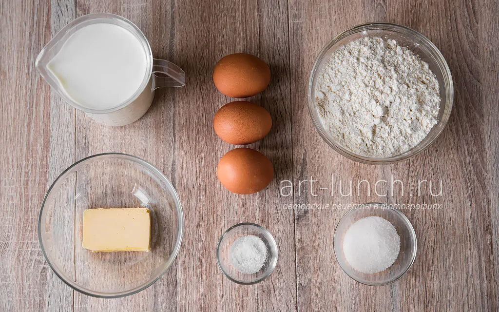
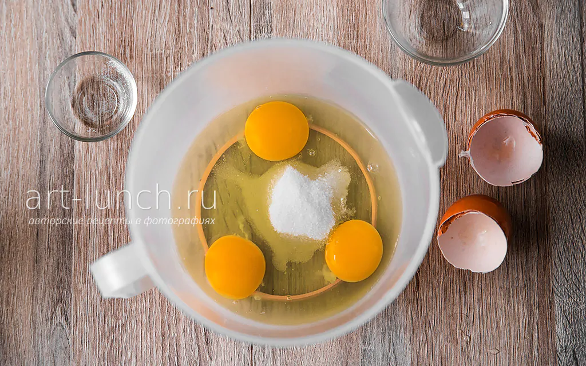
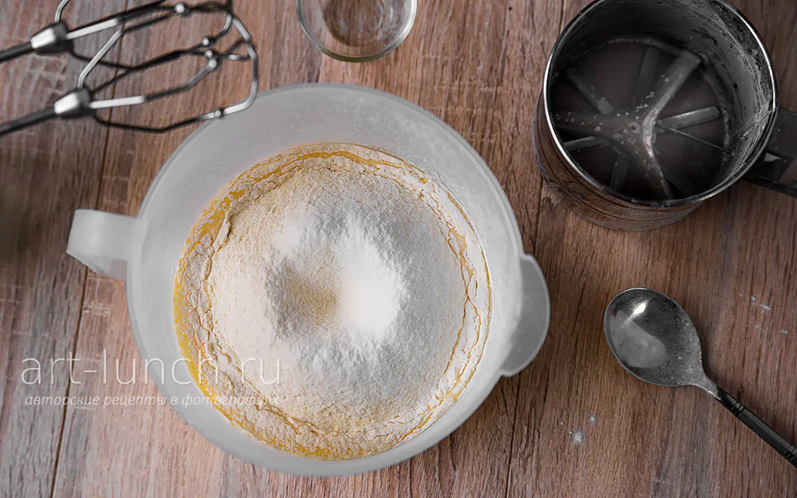

Подготовим все ингредиенты. Хорошо, если все они будут комнатной температуры, тогда они лучше соединятся. Поэтому лучше достаньте яйца (3 шт.) и молоко (500 мл) из холодильника заранее. Масло (30 г или 2 ст. ложки) можно использовать как растительное рафинированное (без запаха), так и сливочное. Сливочное масло придаёт блинчикам большую румяность и сливочный вкус. Если используете сливочное масло, то его необходимо растопить и дать ему остыть.
Яйца хорошо моем, выбиваем в ёмкость для взбивания, добавляем сахар (30 г или 2 ст. ложки) и соль (1/2 ч. ложки). Перемешиваем до однородности миксером, венчиком или просто вилкой. Здесь у нас нет необходимости взбить яйца в пену, нужно лишь перемешать до однородного состояния и полного растворения соли и сахара.Яйца хорошо моем, выбиваем в ёмкость для взбивания, добавляем сахар (30 г или 2 ст. ложки) и соль (1/2 ч. ложки). Перемешиваем до однородности миксером, венчиком или просто вилкой. Здесь у нас нет необходимости взбить яйца в пену, нужно лишь перемешать до однородного состояния и полного растворения соли и сахара.
Добавляем к яичной массе небольшую часть молока, где-то 100-150 мл. Мы не наливаем всё молоко сразу, потому что, при добавлении муки, более густое тесто проще перемешать до однородного состояния. Если выльем всё молоко сразу, скорее всего, в тесте останутся непромешанные комочки муки, и придётся в дальнейшем процеживать тесто, чтобы от них избавится. Так что пока добавляем только небольшую часть молока и перемешиваем массу до однородности. Просеиваем муку (200 г) в ёмкость с тестом. Это необходимо для того, чтобы насытить муку кислородом и очистить её от возможных примесей, поэтому рекомендую не пропускать этот пункт.

Перемешиваем тесто. Сейчас оно довольно густое, и должно перемешаться до гладкого однородного состояния, без комочков. Теперь добавляем оставшееся молоко и снова перемешиваем. Ну а теперь, когда тесто готово, пора жарить блины. Я предпочитаю использовать специальную блинную сковородку, а ещё лучше сразу две, так получается жарить вдвое быстрее. Я смазываю сковородку маслом только перед жаркой первого блинчика, дальше этого не требуется, хватает того масла, которое мы добавили в тесто. Однако, тут всё зависит от сковороды, если блинчики будут прилипать к сковородке, то смазывайте её каждый раз, перед тем, как налить тесто. Смазывать сковороду лучше растительным маслом, т.к. сливочное очень быстро начинает гореть. Используйте для смазывания сковороды силиконовую кисточку или просто салфетку, пропитанную маслом. Итак, хорошо разогреваем сковородку, потому что, именно на раскалённой сковороде, получаются пористые блины, с дырочками, а ведь это то, чего мы и добиваемся. На плохо разогретой сковороде дырочек на блине у вас не получится.